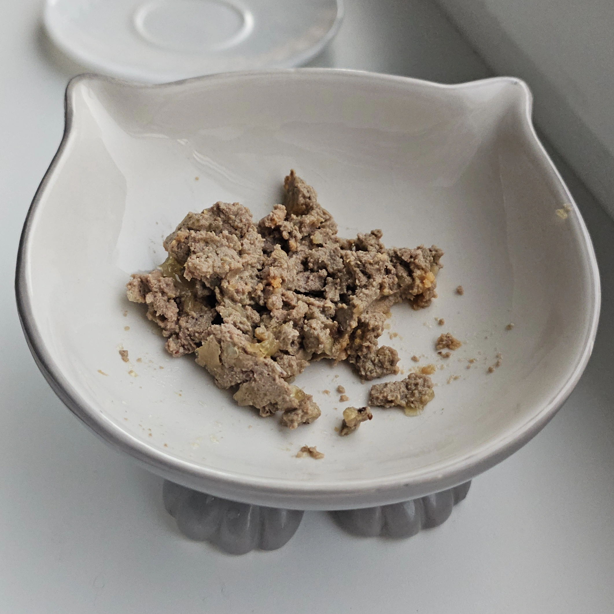
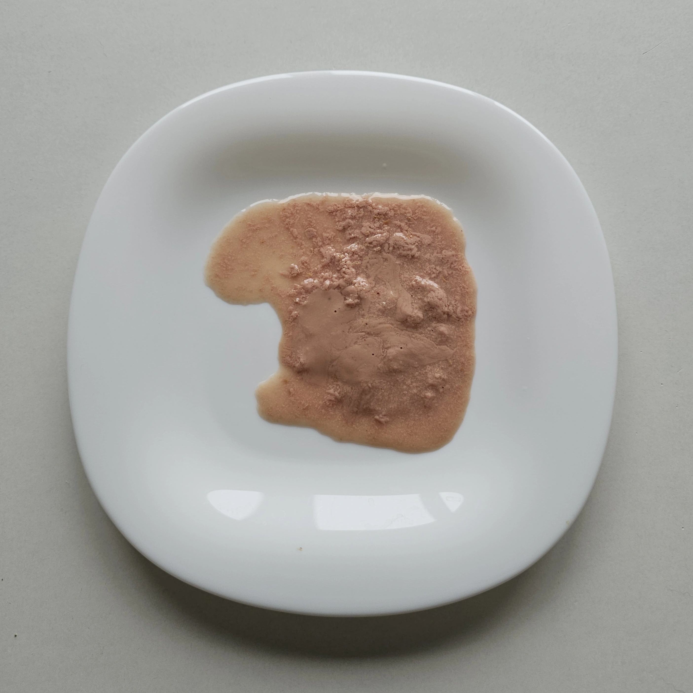

Наглядное пособие по уходу за Маркизом
«Если у тебя есть пакет — значит у тебя есть все»
Добро пожаловать!
Огромное спасибо, что согласились присмотреть за нашим любимым котиком, пока нас не будет. Ваша помощь для нас невероятно важна, и благодаря вам мы можем быть спокойны!
Пожалуйста, внимательно ознакомьтесь с правилами ниже. И помните: если возникнет любой вопрос — мы всегда на связи!
🎯 Цель
Главная задача вашего пребывания — следить за тем, чтобы этот джентльмен был сыт, напоен, находился в комфорте и регулярно ходил в туалет.
Маркиз сейчас проходит этап лечения и восстановления, поэтому здесь собраны все самые важные инструкции при выполнении которых вы гарантируете Маркизу комфорт, безопасность и быстрое выздоровление, нам — спокойствие во время поездки, а сами отлично проведете время и получите море удовольствия, работая личным слугой у самого искусного беззубого манипулятора.
Важные правила
- Не оставлять одного более 6–8 часов: нужно следить за его состоянием и походами в туалет. Если камень застрянет на выходе, кот не сможет писать и у нас будет всего 24 часа на лекарство или визит в клинику.
- Давать много воды каждый день: вода обтачивает существующий камень и не дает образовываться новым камням. Маркиз не пьет воду отдельно, ее нужно добавлять в еду.
- Никакой сторонней еды: не давайте Маркизу никакие человеческие продукты (он будет умолять). Он соблюдает лечебную диету, которая поддерживает кислотность мочи на уровне, необходимом для растворения камня.
- Свобода перемещения: не закрывайте двери в ванную (там стоит его лоток) и другие комнаты — Маркиз предпочитает находиться со своей стаей.
- Закрытые двери и окна: окна держите только на проветривании вверх, входную дверь всегда закрывайте на замок.
📜 История лечения: Почему это так важно?
Мы уже закончили лечить зубы (их больше нет). Но у Маркиза все еще есть небольшой камень в мочевом пузыре. За два месяца он уменьшился с 3,7 до 2,1 миллиметра в диаметре. Наша главная цель на данный момент — размыть его еще больше и выписять.
Для этого Марикизу критически необходимо максимально возможное количество воды каждый день. Чем больше жидкости он получает, тем ниже плотность мочи и тем меньше риска, что камень застрянет на выходе.
Недостаточное количество воды в день, наоборот, приведет к застою мочи, накоплению новых минералов, увеличению размера существующего камня и сбросу текущего прогресса.
✅ Ежедневный чек-лист
- Кормить: 3 основных обеда и 2-4 перекуса с добавлением воды в каждый прием пищи.
- Чистить лоток: проверять, чтобы Маркиз пописал не менее 2 раз.
- Бить жепу: бить жепу ровно 43 908 589 0746 раз.
- Развлекать: играть с пакетом 78 952 757 289 раз.
Кормление
🚨 Главные базовые правила
- Только бутилированная вода: используйте только воду из кулера. Вода из под крана грязная и пахнет плесенью.
- Гигиена посуды: во избежание новых проблем мыть тарелки стоит хотя бы 1 раз в день или каждый раз давать любые тарелки/блюдца из шкафчика, потом просто запускать посудомойку. Миску с котиком в посудомойку не ставить, она не выглядит надежной 🤔
- Вода через шприц: на шкафчике лежит шприц без иглы на 3 мл. В любой прием пищи нужно добавлять хотя бы один целый шприц, потому что кот не пьет воду отдельно. Шприц нужно ополаскивать, чтобы на нем ничего не копилось.
🥫 Консервы
Консервы — это основа рациона, так как в них больше всего воды (80%).
.webp)
- Норма: За день Маркиз должен съесть всю баночку.
- Как давать: банку лучше открывать с утра и разделить на три приема пищи, чтобы вечером уже выбросить пустую. Хранить банку нужно в холодильнике с плотно закрытой крышкой. Крышки можно мыть в посудомойке. После холодильника новую порцию нужно разогреть в микроволновке 10 секунд просто нажав старт и перемешать.
- Секретный трюк: в каждую порцию добавить 3 мл воды и хорошо перемешать прямо в тарелке. Кот не будет есть, если заметит сырую воду — он слишком избалован.
-
Как накладывать (опционально): отклейте мясо от дна тарелки после перемешивания и сделайте его объемнее. Из-за отсутствия зубов Маркизу будет труднее слизывать прилипшую ко дну массу. Оставляйте корм горкой.

- Утренний аппетит: утром (особенно в жару) кот может не сразу хотеть есть. Но если он мяукает и зовёт на кухню — значит пора!
- Что делать, если Маркиз игнорирует консервы: натыкайте в паштет несколько гранул сухого корма. Это его подкупит, и он съест всю порцию (использовать только в крайнем случае).
🍹 Лакомства
Пакетики с жидким лакомством — наш главный инструмент для потребления большого количества воды.

- Норма: 2–4 пакетика в день. Давать обязательно! Даже если Маркиз сам не просит — всё равно предлагайте. Воды должно быть МНОГО.
-
Рецепт «волшебной жижи»: отрежьте уголок пакетика и налейте туда столько воды из шприца, сколько влезет. Согните край пакетика, зажмите зажимом и очень хорошо посминайте пальцами и потрясите до абсолютно однородной консистенции. Должна получиться равномерная однородная жижа. Если не домешать, то получится вода с маслом, и кот с ужасом удерет из комнаты.


🥣 Сухой корм
Сухой корм — это главная зависимость и любовь Маркиза, но это ловушка. Он вкусный и легкий но в нем нет воды. Поэтому на перекус делаем суп:

- Насыпьте порцию сухариков в его тарелку с кошкой, залейте водой (чтобы вода полностью покрыла сухарики и они плавали) и оставьте отмокать на 10–20 минут.
- Важно: пока сухарики замачиваются, поставьте тарелку на холодильник! Иначе они магическим образом исчезнут раньше времени.
- Воду НЕ сливать! «Магия сухарей» пропитывает воду ароматом, и вредина с удовольствием вылакает весь этот суп до последней капли.
Уборка
🧘♂️ Спокойный контроль
Если Маркиз ведёт себя как обычно (просит еду, ходит в туалет, играет, активный) — не нужно бояться и проверять лоток каждые 2 минуты!
Достаточно проверять и убирать его хотя бы раз в 24 часа в одно и то же время. Просто ненавязчиво наблюдайте за котом в течение дня — момент, если что-то пойдет не так, пропустить очень трудно.
🧹 Как правильно убирать лоток
- Достаньте защитный коврик и вытяните лоток к себе, чтобы было удобно.
- Потрясите его не поднимая, чтобы все комки поднялись наверх и их стало видно.
- Приподнимите крышку спереди (она открывается не снимаясь) и совком уберите все комки и какашки в пакет с накопившимся за день мусором.
- Верните лоток обратно и выбросьте пакет в мусоропровод.
📈 Дневные нормы отходов
- Количество: Маркиз обязан писать не менее 2 раз в день. Какать он ходит 1 раз в 1-2 дня.
- Размер комков: Комки мочи должны быть большими, размером с картофелину или помидор.
- Что делать, если за сутки всего 1 комок: Не паникуйте раньше времени. Если кот ведет себя нормально, то, возможно, вы просто пришли или проверяете лоток чуть раньше обычного, и Маркиз ещё успеет пописать свой второй раз за вечер/ночь. Просто понаблюдайте за ним.
🚨 Когда стоит насторожиться и сразу связаться с нами
Ситуации, которые никогда не случались, и мы надеемся, не произойдут, но так как мы в скором времени ожидаем, что камень покинет мочевой пузырь, нужно быть начеку.
- Много мелких комков: Если вместо 2 больших картофелин в лотке появилась куча мелких комочков. Это значит, что кот часто бегает в лоток и выдает мочу мелкими порциями. Нужно будет дать ему лекарство и понаблюдать, вернется ли все в норму.
- Полное отсутствие мочи: Если кот вообще не писает или бегает в лоток, долго тужится, мяукает, а мочи нет — камень застрял на выходе. Нужно будет дать ему лекарство, понаблюдать 1-2 часа, сходит ли он в туалет, если нет, нужно незамедлительно везти его в клинику.
🏥 Что делать в чрезвычайной ситуации
- Шаг 1: Связаться с нами немедленно. Не паниковать — лекарство уже расфасовано, Маркиз без проблем его слизывает смешанным с мясом в тюбике лакомства.
- Шаг 2: После приема Тамсулозина понаблюдать. Если писает маленькими порциями, спазм должен уйти, и все придет в норму. Если не писает совсем — шаг 3.
- Шаг 3: Если после лекарства Марикз не начал писать — его срочно нужно посадить в переноску и отнести в ветклинику.
Клиника совсем рядом (в пешей доступности).
В клинике врачи всё промоют и отдадут его обратно. Все расходы мы оплатим.
Медлить нельзя! У нас есть запас максимум 24 часа с момента, как камень застрянет. Если моча заблокирована, она перестает выходить, продолжает накапливаться, поднимается к почкам и начинает отравление всего организма.
Игры
Любимые удочки, дразнилки и время для активности.